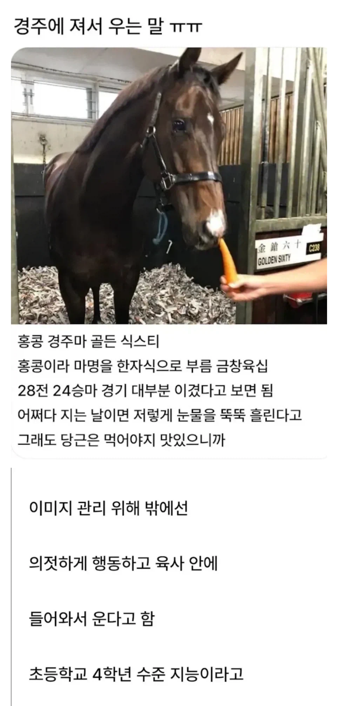
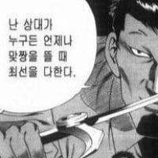
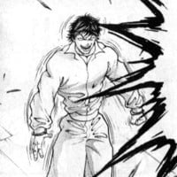

https://bbs.ruliweb.com/best/board/300143/read/76574197

https://bbs.ruliweb.com/best/board/300143/read/76574197

초4면 내가 이길듯 ㅋㅋ
강호동이 초4라고 자네가 이길수있는게 아니라네


초사이언 블루임?
너 달리기 개못하잖아 ㅋㅋ
할건 해야제 ㅋㅋ

나는 바로 울 자신있음 내가 이김 ㅋㅋ

말 관련 이야기 들어보면 정말 똑똑한것같음 소형화된 동물이었다면 반려동물로도 충분했을텐데
작아지면 멍충해질듯
ㅈㄴ귀엽네ㅋㅋㅋ
말의 지능은 인간으로 치면 약 3~5세 정도라고 한다. IQ로 치면 60~70 수준이라고 한다. 인지 능력과 문제 해결 능력, 학습 능력이 뛰어나며 사람과 친해지면 유대도 가능하다. 눈치도 엄청 빠르다. 기억력도 매우 뛰어나다고 알려져 있다. 미러 테스트도 통과하며 동물임에도 불구하고 보다 빠르게 달리는 방법도 배운다고 한다. 사진과 사진기에 대한 개념도 어느 정도 이해하고 있어서 사진기 앞에서 포즈를 잡거나 스스로의 사진을 보는 것을 좋아하는 경우도 있다. 반면 사진 찍히는 걸 싫어하는 경우도 있어서 개채마다 성격이 다르다. 전략이나 전술을 이해할 수도 있다고 한다. 과거 몽골 기병들은 전쟁터에서 신호 하나에 수천 마리의 기마들이 자세를 낮추고 침묵을 유지할 수 있게 가르쳤다고 한다. 게임 규칙도 이해하는데 심지어 게임 중간에 규칙이 변경되는 것도 이해하고 대응한다고 한다.
경마 중에도 이러한 말의 지능이 나온다. 경주에서 승리한 뒤 자신이 이겼음을 알고 기뻐하는 경우도 있으며 기수의 지시와 전략을 이해하고 따르거나 심지어 기수의 지시보다 자신의 전략이 더 낫다고 판단하면 기수의 지시를 무시하고 자신이 페이스를 배분해서 경주하는 경우도 있다고 한다. 신참 기수를 무시하거나 큰 대회가 있기 전 마방의 분위기를 읽고 스스로 다이어트를 해서 체중관리를 하는 경우도 있고, 경기 전에 퍼포먼스를 벌여 관중들을 기쁘게 하는 것을 즐기기도 했다. 경기에서 패했을 경우 화내고 짜증 부리는 경우도 있었다고 하며, 자신의 실수로 경기에서 패한 경우 사람의 눈치를 보는 경우도 있었다고 한다. 어떤 말은 '은퇴'라는 개념을 이해한 듯한 모습을 보이기도 했다고 한다.
참고로 저 골든 식스티는 승부욕이 특히 강한 성격으로 알려져 있으며 저 우는 사진은 17연승 달성 실패했을때의 사진이라고. 근데 또 웃긴게 당근을 또 무지무지 좋아해서 저 상황에서도 당근을 받아먹고 있다고.
알고나니까 더귀엽네 시부랄 ㅠ 힝
꼬추는 니가 더 귀여움
참고로 감정에 반응해서 흘리는 '감정눈물(Emotional tears)'은 인간의 대표적인 특징 중 하나임. 그러니까 기쁘거나 슬플 때 눈물을 흘리는 동물은 인간이 유일하다는 것임.
반면 동물들이 슬픈 상황(ex. 도축장에 끌려가는 소나 새끼를 잃은 어미, 경주에서 진 말 등)에서 눈물을 흘리는 것은 우연의 일치거나 '스트레스에 의한 신체 반응'일 가능성이 높다고 함. 그러니까 슬퍼서 우는 게 아니라 극도의 공포, 혹은 스트레스를 받아서 호르몬 균형이 무너져 눈물샘이 과도하게 자극된 생리적인 과부하 반응이라는 것임.
다만 최근 연구결과에 따르면 개의 경우 주인과 오랜만에 재회했을 때 기쁜 감정이 옥시토신 호르몬 분비를 촉진시키고 그로 인해 눈물양이 증가하는 경우가 있다고 함. 참고로 사람과 개가 만나면 둘 다 옥시토신 분비가 늘어난다고.
내가 골든식스티 본인한테 물어봤는데 다시 떠올려도 분하니까 자꾸 묻지 말라던데?
최근연구에 인간의 감정도 없는거라던데 신체반응을 내감정이다라고 착각한다더만
와신상당
인지능력이 굉장히 뛰어나서 얼룩말을 보면 눈을 크게 뜨고 놀랄 정도...
말 쉑 ㅠ 쥰내 커엽
말이나 소는 성체 비율대로 작아지면
애완동물로 좋을거 같은데..
초4 정도 지능이라면 쟤두 픽시 사 달라고 막 조르나?
흑흑 아삭 으흐흐흑 아삭아삭 허어어엉 아삭
흑흑 맛있었다 오늘 당근은
영상으로 보고 싶다 ㅋㅋㅋㅋ 개귀엽네
진짜 제주도에서 불법으로 말 도축하는거 너무 불쌍하더라
말 두마리 불법도착하는데 한마리는 다른말앞에서 산채로 도축되고 한마리는 그거를 지켜보다가 구조됐다는데
진짜 너무 불쌍하더라
귀엽네ㅎㅎ